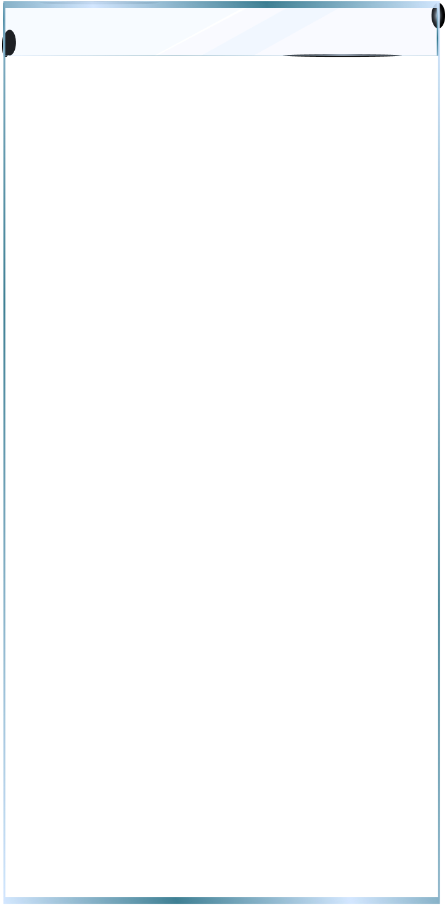
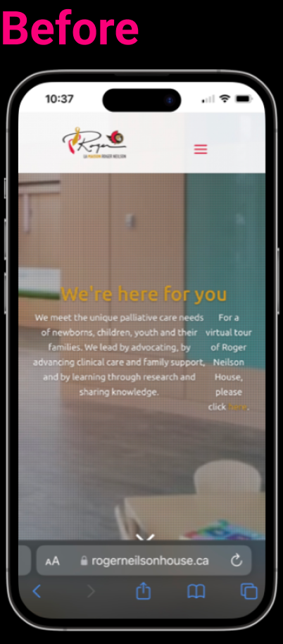
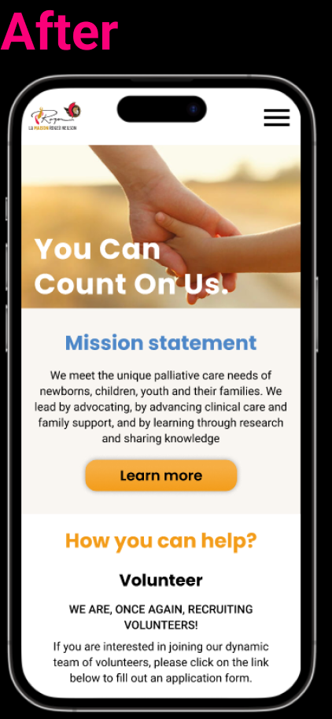

Revitalizing Compassion

 
Reviving Compassion: A Case Study by JULIE NG, CHIARA FALLANI, RAINA AL HUSSAMI & ANIKA MCPHEE (June 8th, 2023 - June 28th, 2023)
Our team embarked on a mission to breathe new life into a not-for-profit organization's website during a case study. The organization we chose for this project was https://rogerneilsonhouse.ca/, driven by our shared passion for their cause. An initial heuristic evaluation of the website hinted at the need for improved user interface (UI) to enhance user engagement. Given that this organization relies heavily on the benevolence of volunteers to support individuals during challenging times, our endeavor was even more significant. Through our research, we uncovered a key issue: potential volunteers were deterred by what they perceived as a 'complex and lengthy' list of requirements in the volunteer application process. Our data clearly indicated that a significant overhaul of the volunteer application flow was necessary to encourage greater user participation To view case study:Transforming the Digital Frontier

Transforming the Digital Frontier, a case study by: Anika McPhee. MAY 15th-31st, 2023
This case study focuses prodominently on the heriarchy of information for a, non-profit organization's website. The original site design faced issues with cluttered navigation, outdated information, and limited resource access. Steps taken to address the problem included a heuristic analysis and usability testing. Insights led to a redesign of the information architecture, improvements in the footer design, and the creation of mockups and a UI style guide. The resulting solution aimed to provide a clearer purpose, intuitive navigation, and easier access to resources. Future steps involve finalizing prototypes and perfecting the footer design.